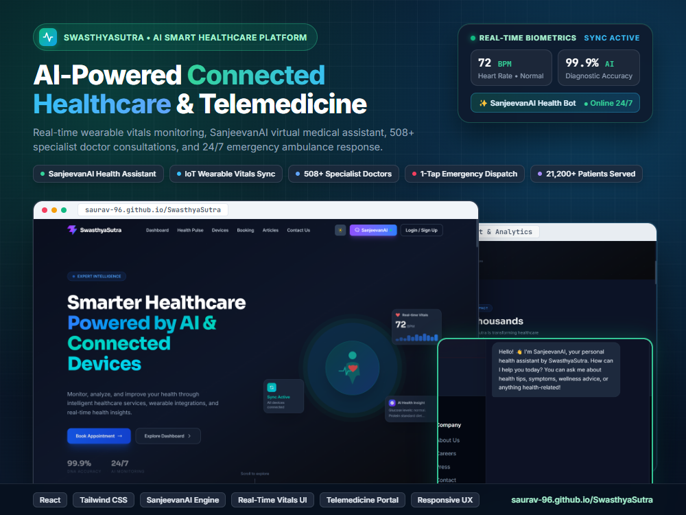

01 • Healthcare Technology
Live Web App
SwasthyaSutra
A healthcare-focused digital platform designed to make healthcare information and services more accessible.
React
Tailwind CSS
SanjeevanAI Engine
Telemedicine UI